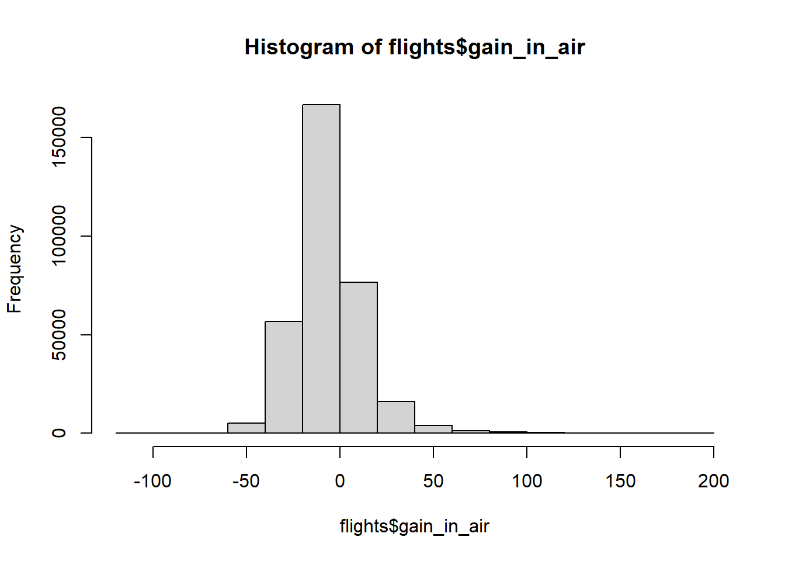
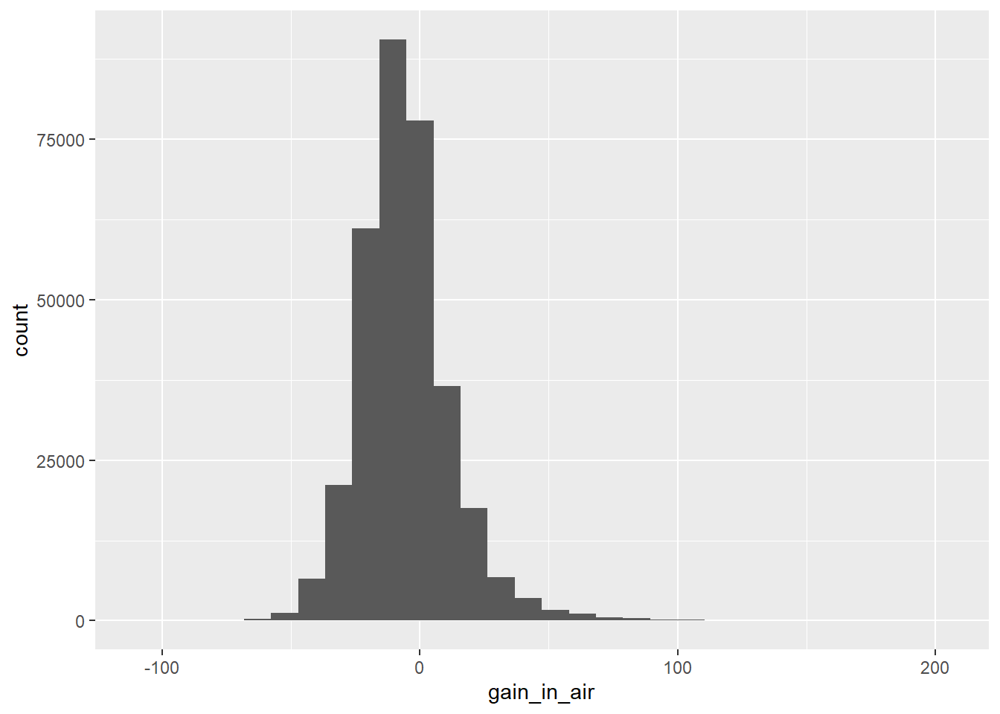
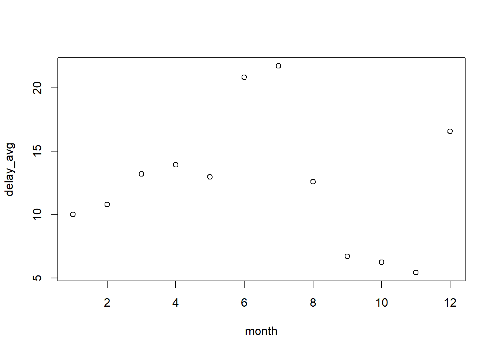
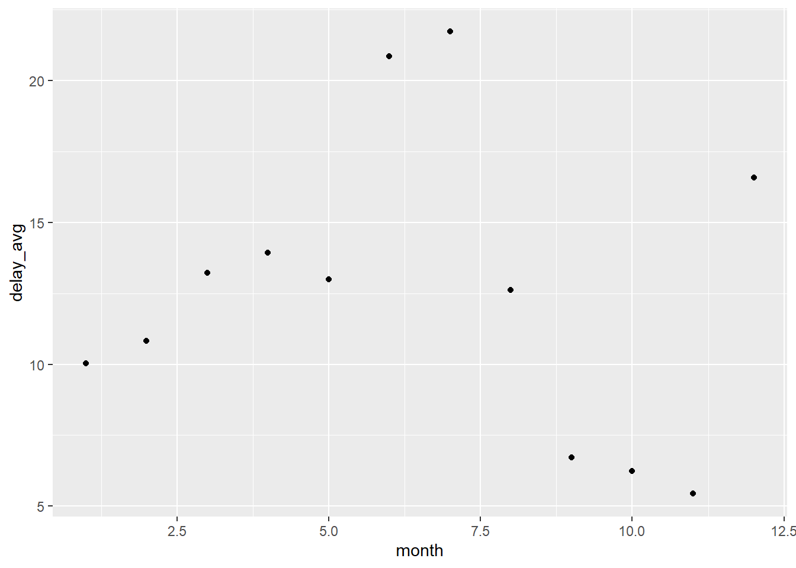
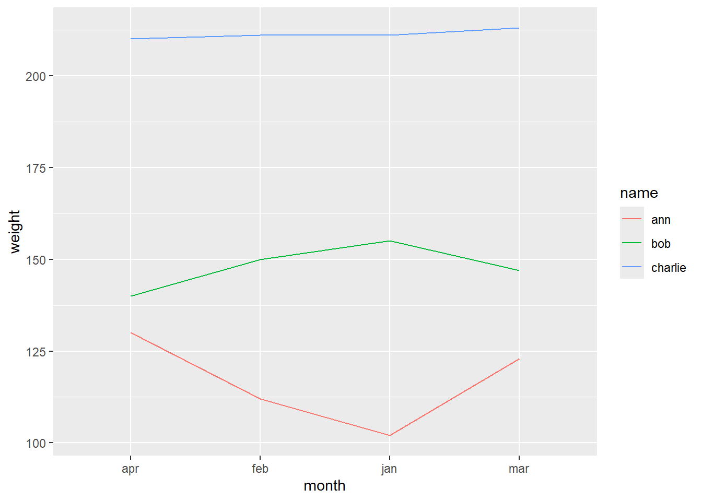
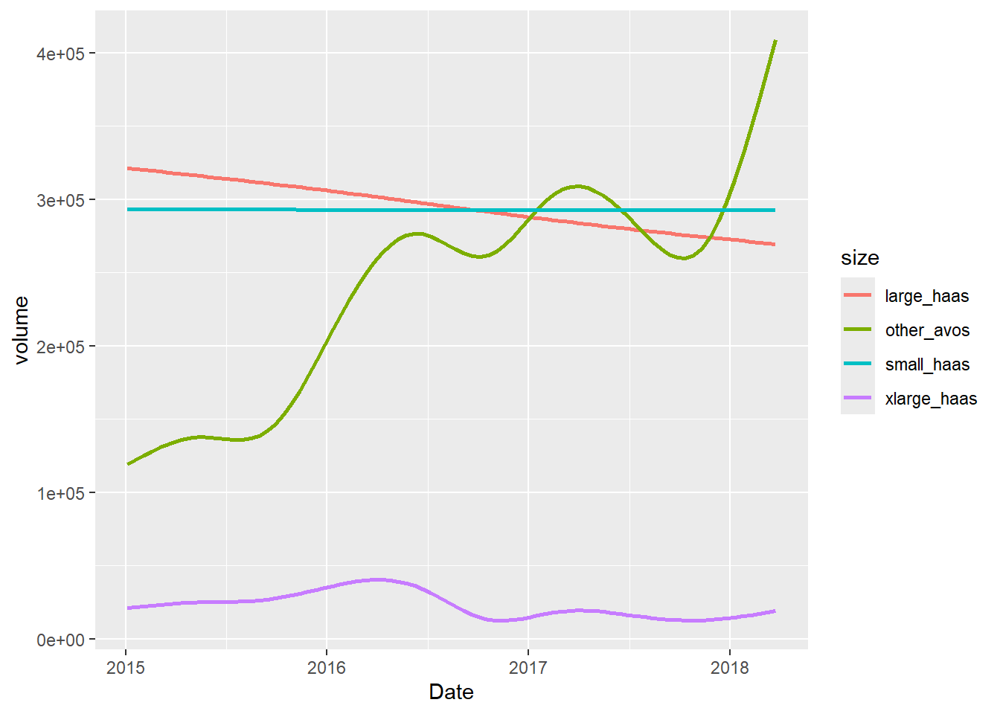
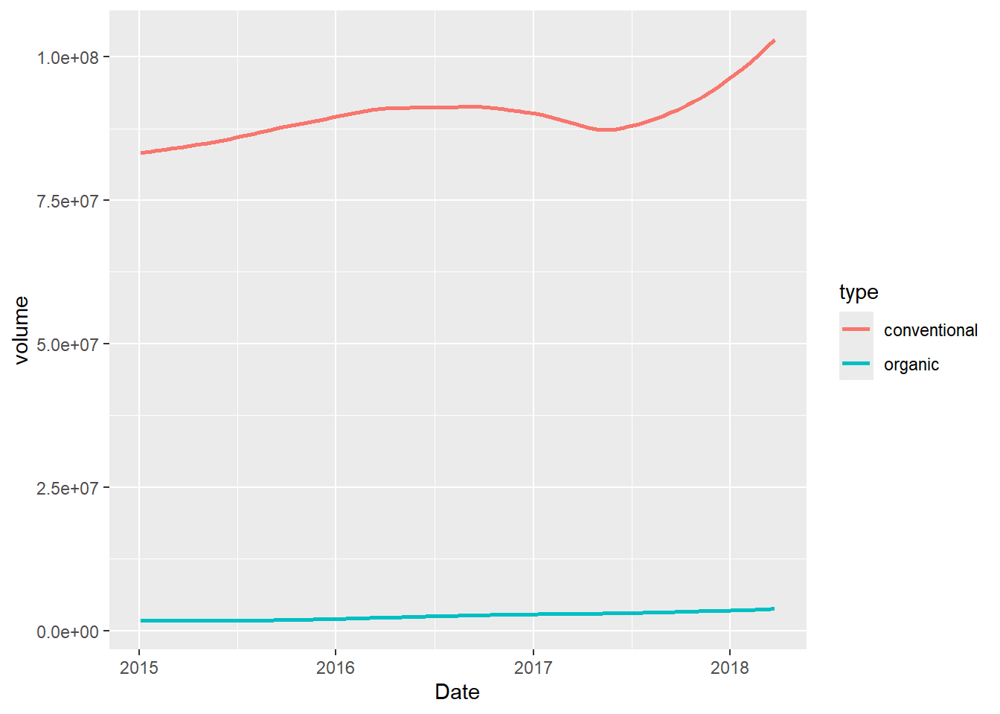

Use dplyr to give the data frame a new column that is the amount of time gained or lost while flying (that is: how much of the delay arriving occurred during flight, as opposed to before departing).
Hint: If your new column doesn’t show up with print(), look at the bottom of the output written in grey: Maybe there was not enough space to print it in your console window! In this case you use print(flights, width = Inf) to show all columns.
d) For practice, repeat the last 2 steps in a single statement using the pipe operator. You can clear your environmental variables to “reset” the data frame.
flights2 <- flights %>%mutate(gain_in_air = arr_delay - dep_delay) %>%# if atribute not already createdarrange(desc(gain_in_air))
e) Make a histogram of the amount of time gained using the hist() function from base R. Alternatively, you can use ggplot2 to create a histogram.
Hint: Use geom_histogram() to make a histogram with ggplot.
library(ggplot2)# histogram with base R:hist(flights$gain_in_air)

# histogram with ggplot2:ggplot(flights) +geom_histogram(mapping =aes(x = gain_in_air))
`stat_bin()` using `bins = 30`. Pick better value with `binwidth`.
Warning: Removed 9430 rows containing non-finite outside the scale range
(`stat_bin()`).

Bonus: Compare the two visualizations: what is different and why are they different?
In the first plot, the mode (the most frequent gain) has a count of over 150’000. In contrast, in the second plot, it has a count of over a bit over 100’000. The difference results from different binning: The bins (“intervals”) used for counting the frequencies have different widths. The larger the intervals, the more occurances per interval!
f) On average, did flights gain or lose time?
Note: Use the na.rm = TRUE argument to remove NA values from your aggregation. Otherwise the result will be NA.
mean(flights$gain_in_air, na.rm =TRUE)
[1] -5.659779
g) Create a data.frame of flights headed to SeaTac (‘SEA’), only including the origin, destination, and the gain_in_air column you created.
Install the nycflights13 package (if needed) and load it. Also load dplyr. View the data set flights .
a) What was the average departure delay in each month? Save this as a data frame dep_delay_by_month.
Hint: you’ll have to perform a grouping operation then summarizing your data.
dep_delay_by_month <- flights %>%group_by(month) %>%# creates a tibble that groups by monthsummarize(delay_avg =mean(dep_delay, na.rm =TRUE)) # calculates the mean departure delay per monthprint(dep_delay_by_month)
c) If your data frame dep_delay_by_month contains only two columns (e.g., “month”, and “delay” in that order), you can create a scatterplot by passing that data frame directly to the base R function plot(). It is a generic function, that automatically makes a scatterplot when passed a data frame with 2 columns.
Alternatively, you can of course also use ggplot2 to create the scatterplot.
# With base R:plot(dep_delay_by_month) # notice that we only need to pass the data frame as is!

# With ggplot2:# In this case, ggplot is more effort!! (BUT it's easier to pimp your plot so that it looks nicer :-D )library(ggplot2)ggplot(dep_delay_by_month) +geom_point(mapping =aes(x = month, y = delay_avg))

d) To which destinations were the average arrival delays the highest?
Hint: you’ll have to perform a grouping operation then summarize your data. You can use the head() function to view just the first few rows for checking.
# A tibble: 1 × 2
dest avg_speed
<chr> <dbl>
1 ANC 490.
Self-Study 4.1 - Task 2: Using the dplyr Join Operations
Install the nycflights13 package (if needed) and load it. Also load dplyr. View the data set flights .
a) Create a dataframe of the average arrival delays for each destination from the flights data frame. Then use left_join() to join on the airports dataframe.
Remark: The airports dataframe is also part of the nycflights13 package and holds information about the airports.
avg_delay <- flights %>%group_by(dest) %>%# creates it as tibble that groups rows by destinationsummarise(avg_delay =mean(arr_delay, na.rm =TRUE)) # calculates the mean arrival delay per groupavg_delay_dest <- avg_delay %>%mutate(faa = dest) %>%# create a new column faa, so we can use it as join conditionleft_join(airports, by ="faa")head(avg_delay)
# A tibble: 6 × 2
dest avg_delay
<chr> <dbl>
1 ABQ 4.38
2 ACK 4.85
3 ALB 14.4
4 ANC -2.5
5 ATL 11.3
6 AUS 6.02
head(avg_delay_dest)
# A tibble: 6 × 10
dest avg_delay faa name lat lon alt tz dst tzone
<chr> <dbl> <chr> <chr> <dbl> <dbl> <dbl> <dbl> <chr> <chr>
1 ABQ 4.38 ABQ Albuquerque Intern… 35.0 -107. 5355 -7 A Amer…
2 ACK 4.85 ACK Nantucket Mem 41.3 -70.1 48 -5 A Amer…
3 ALB 14.4 ALB Albany Intl 42.7 -73.8 285 -5 A Amer…
4 ANC -2.5 ANC Ted Stevens Anchor… 61.2 -150. 152 -9 A Amer…
5 ATL 11.3 ATL Hartsfield Jackson… 33.6 -84.4 1026 -5 A Amer…
6 AUS 6.02 AUS Austin Bergstrom I… 30.2 -97.7 542 -6 A Amer…
b) Which airport had the largest average arrival delay?
# A tibble: 1 × 10
dest avg_delay faa name lat lon alt tz dst tzone
<chr> <dbl> <chr> <chr> <dbl> <dbl> <dbl> <dbl> <chr> <chr>
1 CAE 41.8 CAE Columbia Metropolit… 33.9 -81.1 236 -5 A Amer…
# Notice that we could have done all the above in one single statement using pipes!largest_arrival_delay <- flights %>%group_by(dest) %>%summarise(avg_delay =mean(arr_delay, na.rm =TRUE)) %>%mutate(faa = dest) %>%left_join(airports, by ="faa") %>%filter(avg_delay ==max(avg_delay, na.rm =TRUE))print(largest_arrival_delay)
# A tibble: 1 × 10
dest avg_delay faa name lat lon alt tz dst tzone
<chr> <dbl> <chr> <chr> <dbl> <dbl> <dbl> <dbl> <chr> <chr>
1 CAE 41.8 CAE Columbia Metropolit… 33.9 -81.1 236 -5 A Amer…
c) Create a dataframe of the average arrival delay for each airline, then use left_join() to join on the airlines dataframe (which is also part of the nycflights13 package).
head(airlines)
# A tibble: 6 × 2
carrier name
<chr> <chr>
1 9E Endeavor Air Inc.
2 AA American Airlines Inc.
3 AS Alaska Airlines Inc.
4 B6 JetBlue Airways
5 DL Delta Air Lines Inc.
6 EV ExpressJet Airlines Inc.
# A tibble: 16 × 3
carrier avg_delay name
<chr> <dbl> <chr>
1 9E 7.38 Endeavor Air Inc.
2 AA 0.364 American Airlines Inc.
3 AS -9.93 Alaska Airlines Inc.
4 B6 9.46 JetBlue Airways
5 DL 1.64 Delta Air Lines Inc.
6 EV 15.8 ExpressJet Airlines Inc.
7 F9 21.9 Frontier Airlines Inc.
8 FL 20.1 AirTran Airways Corporation
9 HA -6.92 Hawaiian Airlines Inc.
10 MQ 10.8 Envoy Air
11 OO 11.9 SkyWest Airlines Inc.
12 UA 3.56 United Air Lines Inc.
13 US 2.13 US Airways Inc.
14 VX 1.76 Virgin America
15 WN 9.65 Southwest Airlines Co.
16 YV 15.6 Mesa Airlines Inc.
d) Which airline had the smallest average arrival delay?
# A tibble: 1 × 3
carrier avg_delay name
<chr> <dbl> <chr>
1 F9 21.9 Frontier Airlines Inc.
Self-Study 4.1 – Task 3: Comparing base R and dplyr
a) Install and load dplyr if needed.
Already done above
b) Install and load the fueleconomy package from GitHub as follows:
Install the devtools package (as usual).
The devtool package allows us to make installations from GitHub. Use the following command to install the fueleconomy package from GitHub: devtools::install_github(“hadley/fueleconomy”)
c) Now you have access to the vehicles data frame. Use View() to get a first impression. Select from this data frame the column makes, which holds the different car manufacturers. Save it in the variable makes.
Hint: Since you made a selection on a data frame, the result is a vector.
View(vehicles)makes <- vehicles$make
d) Use the function unique() to list and count the different car manufacturers. Alternatively, use the dplyr function distinct()to do the same. What is the difference?
# A tibble: 128 × 1
make
<chr>
1 Acura
2 Alfa Romeo
3 AM General
4 American Motors Corporation
5 ASC Incorporated
6 Aston Martin
7 Audi
8 Aurora Cars Ltd
9 Autokraft Limited
10 Azure Dynamics
# ℹ 118 more rows
nrow(distinct(vehicles, make))
[1] 128
e) Filter the data set for vehicles manufactured in 1997. Do it first with base R, then with dplyr alone, then with dplyr and piping.
# With base R:cars_1997 <- vehicles[vehicles$year ==1997, ]
# With dplyr:cars_1997 <-filter(vehicles, year ==1997)
# With dplyr and piping:cars_1997 <- vehicles %>%filter(year ==1997)
f) Arrange (sort, order) the 1997 cars by highway (hwy) gas milage (in increasing order). Do it first with base R, then with dplyr alone, then with dplyr and piping.
Hint: In base R, use the order() function to get a vector of indices in order by value.
# With base R:cars_1997_byhwy <- cars_1997[order(cars_1997$hwy), ]
# With dplyr:cars_1997_byhwy <-arrange(cars_1997, hwy)
# With dplyr and piping:cars_1997_byhwy <- cars_1997 %>%arrange(hwy)
g) Mutate the ordered 1997 cars data frame to add a column average that holds the average gas milage (between city and highway mpg) for each car. Do it first with base R, then with dplyr alone, then with dplyr and piping.
# With base R:cars_1997_byhwy_av <- cars_1997_byhwy cars_1997_byhwy_av$average <- (cars_1997_byhwy_av$hwy + cars_1997_byhwy_av$cty) /2
# With dplyr:cars_1997_byhwy_av <-mutate(cars_1997_byhwy, average = (hwy + cty) /2)
# With dplyr and piping:cars_1997_byhwy_av <- cars_1997_byhwy %>%mutate(average = (hwy + cty) /2)
h) Filter the whole vehicles data set for 2-Wheel Drive vehicles that get more than 20 miles/gallon in the city. Save this new data frame in a variable. Do it first with base R, then with dplyr alone, then with dplyr and piping.
# With base R:two_wheel_20_mpg <- vehicles[vehicles$drive =="2-Wheel Drive"& vehicles$cty >20, ]
# With dplyr:two_wheel_20_mpg <-filter(vehicles, drive =="2-Wheel Drive", cty >20)
# With dplyr and piping:two_wheel_20_mpg <- vehicles %>%filter(drive =="2-Wheel Drive") %>%filter(cty >20)
i ) Of the above vehicles, what is the vehicle ID of the vehicle with the worst (i.e., smallest) hwy mpg? Do it first with base R, then with dplyr alone, then with dplyr and piping.
Hint: filter for the worst vehicle, then select its ID.
# With base R:worst_hwy <- two_wheel_20_mpg$id[two_wheel_20_mpg$hwy ==min(two_wheel_20_mpg$hwy)] # Notice that there are two cars with the min hwy mpg!
# With dplyr:filtered <-filter(two_wheel_20_mpg, hwy ==min(hwy))worst_hwy <-select(filtered, id)
# With dplyr and piping:worst_hwy <- two_wheel_20_mpg %>%filter(hwy ==min(hwy)) %>%select(id)
j) Write a function that takes a year_choice and a make_choice as parameters, and returns the vehicle model that has the best (i.e., highest) hwy miles/gallon of vehicles of that make in that year. You’ll need to filter more (and do some selecting)! Do it first with base R, then with dplyr alone, then with dplyr and piping.
# With base R:make_year_filter <-function(make_choice, year_choice) { filtered <- vehicles[vehicles$make == make_choice & vehicles$year == year_choice, ] filtered[filtered$hwy ==max(filtered$hwy), "model"]}
# With dplyr:make_year_filter1 <-function(make_choice, year_choice) { filtered <-filter(vehicles, make == make_choice, year == year_choice) filtered <-filter(filtered, hwy ==max(hwy))select(filtered, model)}
# With dplyr and piping:make_year_filter2 <-function(make_choice, year_choice) { vehicles %>%filter(make == make_choice, year == year_choice) %>%filter(hwy ==max(hwy)) %>%select(model)}
k) What was the most efficient Honda model of 1995 ? (Use your function!)
make_year_filter("Honda", 1995)
# A tibble: 1 × 1
model
<chr>
1 Civic HB VX
make_year_filter1("Honda", 1995)
# A tibble: 1 × 1
model
<chr>
1 Civic HB VX
make_year_filter2("Honda", 1995)
# A tibble: 1 × 1
model
<chr>
1 Civic HB VX
4.2 Reshaping data with tidyr
Exercise 4.2. tidyr
Exercise 4.2 – Task 1: Plotting Time Series of Weights
Consider the following toy data set of weight time series per person:
#install.packages("tidyr")library(tidyr)name <-c('ann', 'bob', 'charlie') jan <-c(102, 155, 211) feb <-c(112, 150, 211) mar <-c(123, 147, 213) apr <-c(130, 140, 210) wts <-tibble(name=name, jan=jan, feb=feb, mar=mar, apr=apr)
a) Copy / paste it in your R-script, view it and answer the following questions:
What is the observed event?
A person has a weight in a specific month. Example: Ann weighs 102 pounds in January. (Note: Probably it’s always measured on the same day of each month!)
What are the recorded aspects of the event?
(1) Name, (2) Month, (3) Weight
Is this data set tidy or messy?
messy
If messy, describe in words how a tidy version of the data would look.
(1) Keep name as a column
(2) Create a column month. Its values are the current column names of columns 2-5.
(3) Create a column weight. Its values are the current values of these current columns.
b) Tidy up the data set using pivot_longer(). Store the result in a new data frame called wts_tidy.
wts_tidy <- wts %>%pivot_longer(cols = jan:apr, # messy partnames_to ="month", # headers as values for monthvalues_to ="weight"# values as vales for weight )
c) Use geom_line() to plot the time series of weights per person. Hints:
Map month to the x-axes.
Map weight to the y-axes.
Map name to the color scale.
Additionally, use the argument group = name within the aesthetic of geom_line() to group observations by person. Otherwise, geom_line() tries to connect all obersvations with a single line, which does not work.
wts_tidy %>%ggplot() +geom_line(mapping =aes(x = month, y = weight, col = name, group = name))

d) Notice that the months in your x-axes are ordered alphabetically. That’s not the order we want! To change that, use mutate() to change the column month from integer to “ordered factor”. Hint:
An “ordered factor” is a normal factor, but with an order that we define manually.
do that, use the arguments ordered and level as follows: factor(month, ordered = TRUE, levels = c(‘jan’, ‘feb’, ‘mar’, ‘apr’))
The following (made-up) data set lists different German car manufacturers. It reports how many models with a specified number of cylinders have been built per manufacturer.
c) Use geom_col() to create a bar plot that shows the frequency per cylinder. Use facet_wrap() to create one such plot per manufacturer. Use ggplotly() to make it interactive.
Hint: Don’t forget to load the library plotly.
library(plotly)
Attache Paket: 'plotly'
Das folgende Objekt ist maskiert 'package:ggplot2':
last_plot
Das folgende Objekt ist maskiert 'package:stats':
filter
Das folgende Objekt ist maskiert 'package:graphics':
layout
d) Notice that the number of cylinders is not in a natural order. To change that, use mutate() to change the data type of the variable cyl. To do that, you have 2 options:
You can either convert the variable cyl in an ordered factor,
or you can use gsub(“\D”, ““, cyl) and as.numeric() to extract the numbers from the strings.
# Option 2: using gsub() to extract the numbers from the stringscars_tidy2 <- cars_tidy %>%mutate(cyl =as.numeric(gsub("\\D", "", cyl))) # All non-numbers (\\D) are replaced by the empty string ("").
- When using gsub(), cyl is converted to numbers, and thus, ggplot puts a number scale on the x-axes.
Thus, there is a slot reserved for, e.g., 7 cylinders, even though cars with 7 cylinders do not exist!
On the other hand, cars with 16 cylinders exist, but zero are produced.
When using this option we cannot distinguish between ‘non-existing’ and ‘zero’!
- This does not happen when we use ordered factors.
Which option is better for visualization?
- Thus, ordered factors are the better option for visualization!
Self-Study 4.2. tidyr
Self-Study 4.2: Analyzing Avocado Sales with tidyr and dplyr
a) Load the packages tidyr, dplyr, and ggplot2. Download the avocado.csv file from GitHub and load it into a variable avocados. Get a first impression of the data using View() and str().
avocados <-read.csv("avocado.csv")str(avocados)
'data.frame': 18249 obs. of 14 variables:
$ X : int 0 1 2 3 4 5 6 7 8 9 ...
$ Date : chr "2015-12-27" "2015-12-20" "2015-12-13" "2015-12-06" ...
$ AveragePrice: num 1.33 1.35 0.93 1.08 1.28 1.26 0.99 0.98 1.02 1.07 ...
$ Total.Volume: num 64237 54877 118220 78992 51040 ...
$ X4046 : num 1037 674 795 1132 941 ...
$ X4225 : num 54455 44639 109150 71976 43838 ...
$ X4770 : num 48.2 58.3 130.5 72.6 75.8 ...
$ Total.Bags : num 8697 9506 8145 5811 6184 ...
$ Small.Bags : num 8604 9408 8042 5677 5986 ...
$ Large.Bags : num 93.2 97.5 103.1 133.8 197.7 ...
$ XLarge.Bags : num 0 0 0 0 0 0 0 0 0 0 ...
$ type : chr "conventional" "conventional" "conventional" "conventional" ...
$ year : int 2015 2015 2015 2015 2015 2015 2015 2015 2015 2015 ...
$ region : chr "Albany" "Albany" "Albany" "Albany" ...
View(avocados)
b) From str(), you can see that the Date column is of type char. To tell R to treat the Date column as a date and not as a string, transform that column using the as.Date() function.
'data.frame': 18249 obs. of 14 variables:
$ X : int 0 1 2 3 4 5 6 7 8 9 ...
$ Date : Date, format: "2015-12-27" "2015-12-20" ...
$ AveragePrice: num 1.33 1.35 0.93 1.08 1.28 1.26 0.99 0.98 1.02 1.07 ...
$ Total.Volume: num 64237 54877 118220 78992 51040 ...
$ small_haas : num 1037 674 795 1132 941 ...
$ large_haas : num 54455 44639 109150 71976 43838 ...
$ xlarge_haas : num 48.2 58.3 130.5 72.6 75.8 ...
$ Total.Bags : num 8697 9506 8145 5811 6184 ...
$ Small.Bags : num 8604 9408 8042 5677 5986 ...
$ Large.Bags : num 93.2 97.5 103.1 133.8 197.7 ...
$ XLarge.Bags : num 0 0 0 0 0 0 0 0 0 0 ...
$ type : chr "conventional" "conventional" "conventional" "conventional" ...
$ year : int 2015 2015 2015 2015 2015 2015 2015 2015 2015 2015 ...
$ region : chr "Albany" "Albany" "Albany" "Albany" ...
?????d) The data only holds total sales volumes (Total.Volume) and the sales volumes for haas avocados (small_haas, large_haas, xlarge_haas), but there are also other avocados included in Total.Volume. Double-check this by summing up haas avocado sales and comparing the sum with the total sales value.
–> Berechnung ist komisch
sum(avocados$Total.Volume - avocados$small_haas + avocados$large_haas + avocados$xlarge_haas >0) # 18249 - This is the number of records in of the data set. It means that on all days the Total Sales Volume is bigger than the Sales Volume of haas avocados.
i) The shape of by_size_tidy is not only tidier, but it also facilitates the visualization of sales over time by size: Use ggplot2 with geom_smooth() to plot a smoothed trendline of sales volumes over time – make one trendline for each size. Hints:
Map the Date to the x-axes, map the volume to the y-axes, map the size to the colour scale.
Inside of geom_smooth(), you can set the argument se = F to hide the confidence bands around the trendlines.)
Bonus:
To see the advantage of this shape for plotting sales over time by size, try to produce the same plot using the data frame by_size instead of the data frame by_size_tidy.
ggplot(by_size_tidy) +geom_smooth(mapping =aes(x = Date,y = volume,col = size),se = F) # Don't display the confidence intervals around the smoothed conditional means
`geom_smooth()` using method = 'gam' and formula = 'y ~ s(x, bs = "cs")'

by_size %>%ggplot() +geom_smooth(mapping =aes(x = Date,y = small_haas, color ="Small Haas"), se = F) +# specify you own label for 'color' inside aes(), e.g., color = "Small Haas". You can use whatever label you wish to appear in the legend (see below)geom_smooth(mapping =aes(x = Date,y = large_haas, color ="Large Haas"), se = F) +geom_smooth(mapping =aes(x = Date,y = xlarge_haas, color ="Xlarge Haas"), se = F) +geom_smooth(mapping =aes(x = Date,y = other_avos, color ="Other"), se = F) +labs(x ="Date", y ="volume") +# Specify the title for the axesscale_color_manual(name ="", values =c("Small Haas"="red", "Large Haas"="blue", "Xlarge Haas"="green", "Other"="yellow")) # the labels must match what you specified above
`geom_smooth()` using method = 'gam' and formula = 'y ~ s(x, bs = "cs")'
`geom_smooth()` using method = 'gam' and formula = 'y ~ s(x, bs = "cs")'
`geom_smooth()` using method = 'gam' and formula = 'y ~ s(x, bs = "cs")'
`geom_smooth()` using method = 'gam' and formula = 'y ~ s(x, bs = "cs")'

j) Now use by_size_tidy to compute the average sales volume per size.
Hint: First group by size using group_by(), then compute the average using summarize().
`geom_smooth()` using method = 'loess' and formula = 'y ~ x'
m) From the above plot we see that the sales volumes of both avocado types seem to increase over the years. Now let’s see if we can (visually) confirm this correlation in a scatterplot: if our assumption is correct, we should see a linear correlation between conventional and organic sales. Create this scatterplot using ggplot2. Hints:
In order to check for a linear correlation between the types, we must map conventional sales to the x-axes and organic sales to the y-axes.
Yet, in the data frame by_type the sales numbers for both avocado types are mingled in one column, namely volume.
To facilitate the plotting, it would be good to have one column per type, each holding the respective sales numbers. Then we could simply map each column to an axes.
To achieve this, reformat the data frame by_type using pivot_wider(). Store the result in a new data frame called by_type_wide.
Now use ggplot2 with geom_point() to generate the scatterplot. Does it confirm our assumption?
As expected, the scatter plot shows some linear correlation between the sales numbers, but it is not too strong. This was expected as well: We could already see in the temporal plot that conventional sales vary much stronger than organic sales, which is reflected in the relatively wide spread of points.